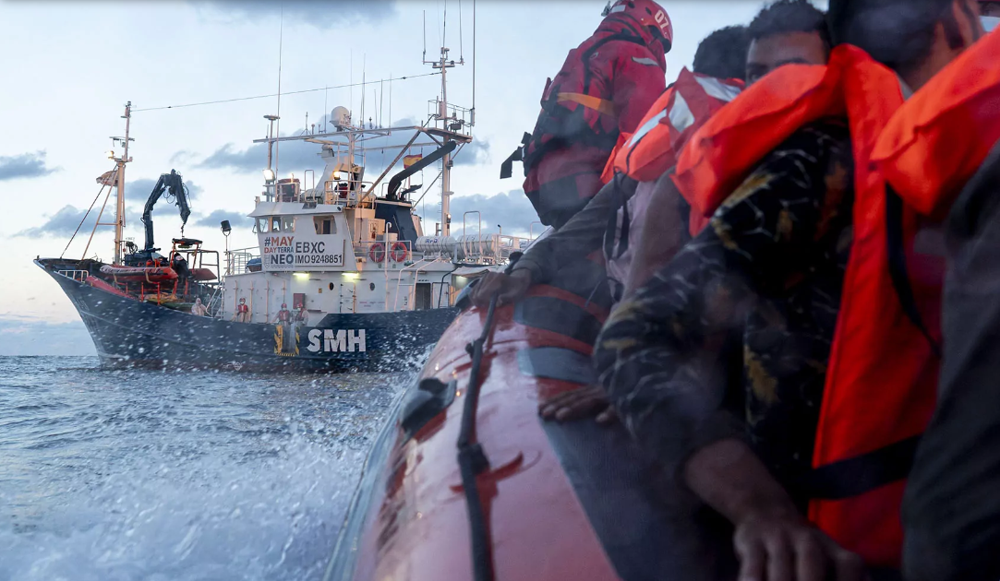

<div class="image-container">
  
  <div class="overlay">
    <h1>GURI BURUZ</h1>
    <h2>Nor gara eta zer egiten dugu?</h2>
    <p>Itsasoko Zaindariak erreskate eta garapenerako laguntza humanitarioko erakunde bat gara, Euskadin egoitza duguna. 2015ean sortu ginen, itsas salbamenduaren mundutik datozen pertsona konprometitu batzuekin, Mediterraneo itsasora mugitzera behartutako migratzaileen erreskatean eta harrera humanitarioan zentratuz. Gure helburua bizitzak salbatzea eta migratzaileei osasun-laguntza eskaintzea da. </p>
    <h2>Nola hasi ginen?</h2>
    <p>Itsasoko Zaindariak Grezian hasi zen, Kriti uhartean, itsasoan arriskuan zeuden pertsonen laguntzen. Gaur egun, erreskate eta garraio medikoen bidez Mediterraneo itsaso osoan lan egiten jarraitzen dugu.</p>
    <h2>Gure printzipioak eta helburuak.</h2>
    <p>Gure filosofia gizatasunean, inpartzialtasunean, neutraltasunean eta gardentasunean oinarritzen da, eta helburuak honakoak dira: migratzaileen erreskate seguruak bermatzea, heriotza gehiago saihestea eta giza eskubideak defendatzea, bereziki Mediterraneoko krisiari erantzunez.</p>
  </div>
</div>
